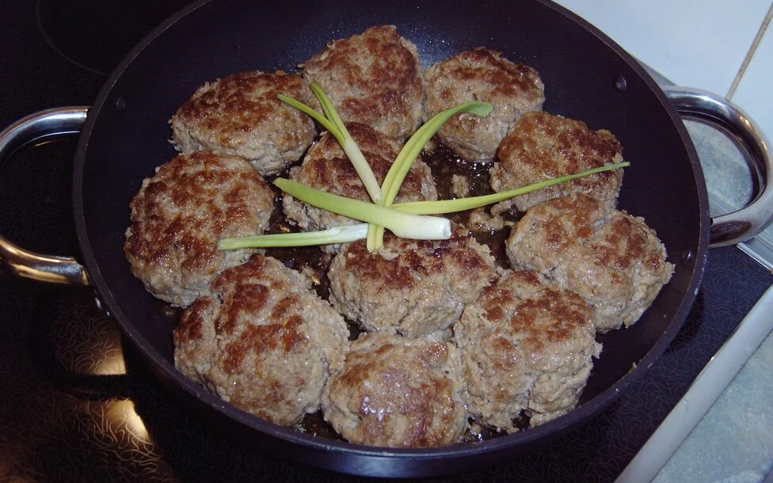

German Meatballs

ingredients for 4 Portions
Ingredients
- 1kg minced meat (mixed)
- 2 onions
- 2 eggs
- 2 bread rolls/buns
- 1 bunch of parsley (optional)
- 2 tsp mustard
- some vegetable fat or oil
- salt
- peppe
Directions
- soak the bread rolls in lukewarm water. Then squeeze and put it in a bowl. Add the eggs, diced onions, mustard, salt, pepper, and small chopped parsley. Mix it with a whisk.
- Now add the minced meat. Knead everything properly. Then form round flat balls (check video for advice).
- let the plant fat or oil get hot in a pan. put the meatballs in there and let them fry brown on both sides.
- potatoes, mashed potatoes, rice, pasta with a nice sauce all fit as a side dish. good appetite